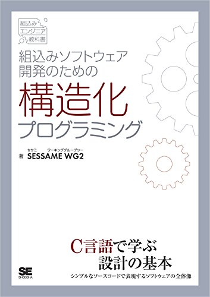
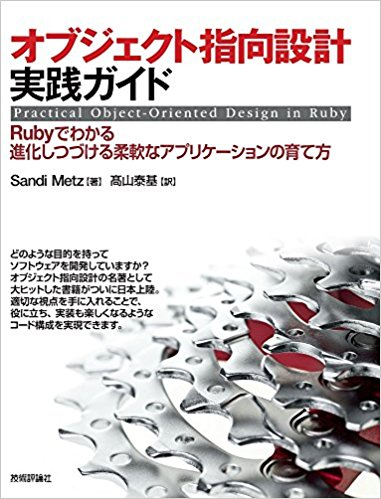

コード設計
500行超え、1000行超えは朝飯前な関数・メソッドに眼球と脳みそがレイプされている今日この頃。
「このクソコード書いたやつは電車に轢かれろ」なんてしょっちゅう考えるわけだが、「じゃあおれはどうなんだ？これだけ悪態ついといてクソコードを書いてやしないだろうな？」という恐怖心も湧き上がる。
そもそもクソコードを書いてしまう原因は、個々人の能力不足だけではなく、それ以前の構造的な部分、すなわち設計段階がクソなせいでもあるんじゃないだろうか、と思う。
というわけで、コード設計に関する本を2冊読んでみた。以下、本の内容の雑な箇条書きメモ。
『組込みソフトウェア開発のための構造化プログラミング』

- C言語の本。とはいっても、Algol語族（Javaなど大半の言語がこれにあたる）の経験者なら楽勝で読める難易度だろうし、ポインタもそんなに出てこない。
- 「『関数・メソッドを分割しろ、1つの関数は60行以内で書け。100行超えたら死刑』なんて巷じゃよく言われるけど、どう分割すればいいのかわかんない」おれみたいなへなちょこが読むべき本。
- 1つのファイルの公開関数は5〜9個にする。
- モジュールを抽出する際の視点（そして関数名を考える際のヒント）は、「どのように動くのか」ではなく「何をするのか」。
- 「なぜ〜するのか」と問い続けることで、上位に位置づけるべきモジュールを発見できる。すなわち、「目的」を上位に、「手段」を下位に。
- モジュールと、その直下のサブモジュールの名前を見ただけで、関数の概要を理解できるようにする（2階層ルール）。
- 2階層ルールは、どの階層でも成立しているのが望ましい。
- 開始処理・終了処理、入力・出力など、対となる処理は同じ階層に位置づける。
- グローバル変数やハードウェア制御が関数内部に存在する場合、その旨をコメントしておく。
- 最上位のモジュールは1つだけにする。
- 入力部と出力部を分割する。
- 引数と戻り値を明確にする。
- 上位モジュールが下位モジュールに依存する単方向の依存性を留める。下位から上位を呼び出してはならない。
- 同じ階層での横のつながりをなくす。
- フローチャートは処理の流れ・時系列を図解しているだけなので、コード全体を俯瞰できるような構造設計には役立たない。
- 「まず動くソースコードを作って、テストして問題に気づいて、それを修正する、という繰返しばかり行っていると、3年後には他のエンジニアとのスキルに大きな差が出てしまいます。（中略）最悪なのは、自分で不具合を作り込んでおいて、自分でそれを修正する、といういわゆるマッチポンプ現象です。」
- 長持ちするプログラムを作りたいなら、アルゴリズムよりデータ構造を重視せよ（アルゴリズムはデータ構造に依存するため）。
- 単一責務を徹底せよ。これは、機能の追加などで崩れやすくなるので注意。
- いきなり詳細から作るのではなく、まず骨格を作り、反復的に肉付けしていく。
- 本質的なデータ：入出力データ、入力を出力に変換するための中間データ、モードや状態。
- データ構造の内部を意識しなくてもアクセスできるインターフェースを提供する。
- 上位からの「指示」、下位からの「報告」を意識して設計する。
- 情報 = データ + 意味
- ソースコードを正確に反映した構造設計図を、ドキュメントとして残しておくべし。機能追加などの際にそれを見れば、どこを修正すべきか一発でわかる。
『オブジェクト指向設計実践ガイド Rubyでわかる進化しつづける柔軟なアプリケーションの育て方』

- Ruby本。Ruby界隈ではけっこう有名らしい。
- こちらも、ある程度オブジェクト指向言語を経験していれば、Rubyに触ったことがなくても読めるだろう。
- 翻訳本だから、ちょっと読みづらい。
- 「文法は知ってるものの、オブジェクト指向でどんなコードを書けばいいのか、どんな時に継承とかのテクニックを使えばいいのかよくわかってない」おれみたいな雑魚が読むべき本。
- オブジェクト指向：部品（オブジェクト）間の相互作用（メッセージの受け渡し、メソッドの呼び出し）。メッセージをオブジェクトに届けるには、送り手が受け手のことを知っている必要がある。この余計な知識が、2つのオブジェクト間に依存関係をつくる→変更・再利用しにくくなる。
- オブジェクト指向設計：上記のようなことにならないように、依存関係を管理。
- 詳細設計：未来予知のこと。あるいはユーザの潜在的・将来的欲求の感知。人間には不可能。
- 単一責任のクラスをつくる（することは1つだけ）。
- メンバ変数は、常にアクセサメソッド（getter,setter）経由で参照させる。そのメンバ変数を修正する必要が生じた際、代わりにアクセサメソッドを修正すればいいから。
- メンバ変数が配列やハッシュなど複雑なデータ構造の場合、その配列の何番目がどういったデータなのかという知識をさらに別のアクセサメソッドや内部クラスに包み隠す。
- もちろんメソッドも単一責任。
- 蜜結合：あるクラスがその内部で、別のクラスをインスタンス化してたり、そのコンストラクタの引数を知ってたり、特定のメソッドの存在を想定してたり。
- 疎結合：メンバ変数に別のクラスをもつとき、そのクラスのインスタンス化を外部（ファクトリー）に任せる。
- 「固定された引数の順番や個数」という知識を回避するため、キーワード引数やデフォルト引数を活用する。
- なんなら、初期値を与える部分もモジュール化する。
- 依存方向について：具象クラスが抽象クラス（変更の可能性が低い）に依存するようにする。
- publicにすべきメソッド：クラスの責任を明確にしている。外部からの実行を想定する。変更されにくい。「何のデータを送信元に届けるか」。ウェイター。
- privateにすべきメソッド：実装の詳細に関わる。外部からの実行を想定しない。変更されやすい。「どのようにデータを加工するか」。厨房のコック。
- なにをクラスにすべきか：データと振る舞いの両方を持つ「名前」。ぶっちゃけ、こちらを見つけるのは簡単。
- 見つけるのが難しいクラスをあぶり出すには、UMLのシーケンス図を活用する。
- シーケンス図でメッセージの受け渡しを明記することで、「このメッセージに応答すべきクラスとはなんぞや」、「送信すべきメッセージの数が多すぎやしないか（privateメソッドにすべきメッセージが混入していないか）」といったことが視覚的に考えやすくなる。
- クラスの関係を管理する3つの方法：ダックタイピング。継承。コンポジション。
- ダックタイピング：別々のクラスが同名のメソッドを持つ場合、それらを仮想のスーパークラス（ベースクラス）と同一だと見なせる。これらのクラスにメッセージを送信する場合、仮想のスーパークラスに送信すれば、具象への依存を減らせる。
- モジュール：特定のメッセージを共有すればいいだけだったダックタイプとは違い、特定の振る舞いも共有する必要がある場合に使用する。かといって、わざわざ継承関係にするほど関連が深いわけではない場合に有効。Rubyではmix-in。
- 継承：大部分のデータや振る舞いが似通っている場合に使用する。テンプレートメソッド、フックメッセージといったテクニックを使い、プログラマにサブクラスでの具体的な実装を促すよう明記する。継承階層は浅く留めるべし。拡張しやすいが、修正しにくい（オープン・クローズド）。
- テンプレートメソッド：スーパークラスでは初期値をきめるだけの抽象的な処理を、サブクラスではそれをオーバーライドし特化的な処理を実装。
- フックメッセージ：スーパークラスでは、コンストラクタなどに埋め込んだ、何もしないメソッド。サブクラスはそれをオーバーライドして具体的な実装をする。
- コンポジション：あるクラスを、複数のパーツ（独立した別のクラス）から構成されるものと見なす。パーツの組み合わせによって、様々なオブジェクトを生成できる。
- 基本的に継承よりかはコンポジションを選択するべし。ただし、パーツが少なく、より特化したオブジェクトを生成したい場合は継承を選択する。
とりあえずこんなもんか。Ruby本のほうのメモがやたらと長くなっちった。
これらの本を読む順番だが、前者から先に読めばいいと思われる。
前者で関数の作り方を学び、次に後者で変数と関数を組み合わせたクラスの作り方を学ぶ、という具合に、段階的に学習できるからだ。
以下、2つの本の相違点。
- 前者：モジュールは、より下位のモジュール（具体的な処理）にだけ依存すべき。
- 後者：クラスは、より抽象的なクラスにだけ依存すべき。
「こいつら正反対のこと主張してるじゃねえか」と思ってしまいそうになるが、まあ落ち着こう。前者は関数の粒度のことを前提にしているのに対し、後者はクラスという粒度でモノを言っている。そう考えれば、これら2つの意見は衝突しない。
そういえば、関数型言語でのソフトウェア設計はどういうものなのだろうか。C言語でのそれと近いものなのか、はたまたまったく異なるものなのか。非常に気になるが、そういうこと書いてそうな本がわからない。